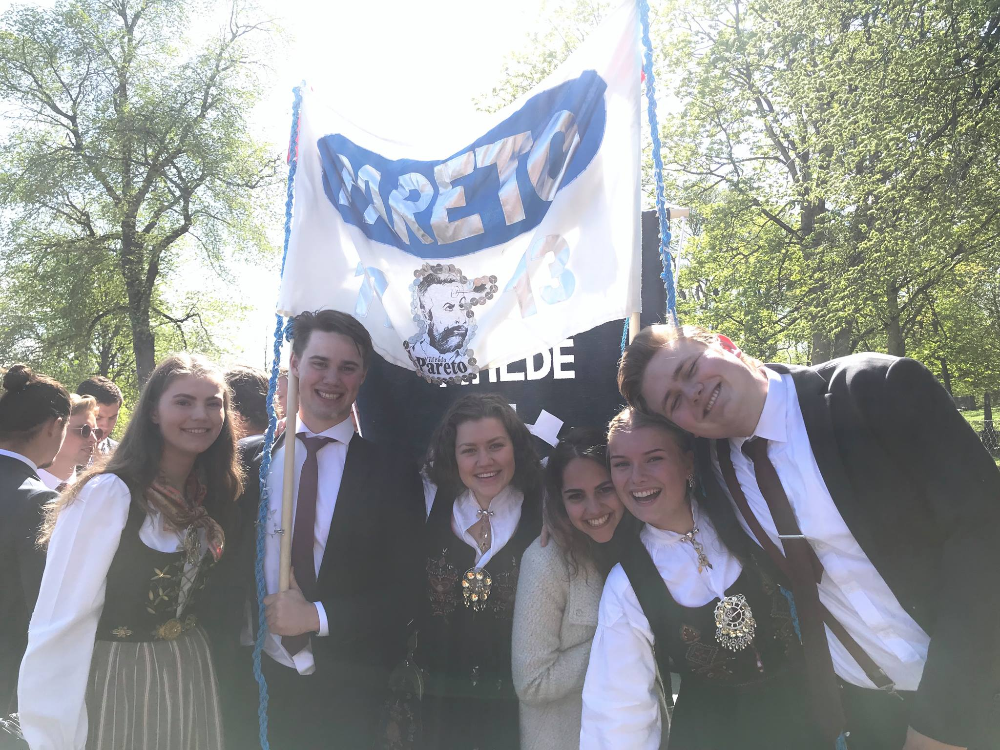

Our client is the student organization Pareto, which is the student Organisation for economics and financial economy at NTNU in Trondheim. Pareto is responsible for arranging social events for all the students. This includes tips, Parties, quizzes and other happenings throughout the semester. They do not have a website, so all their information has to go through other channels, like Facebook, instagram and stands at the campus. This can be a bit chaotic with information coming from so many different places. Therefore we would like to make a website for them where they can share all their information and it can be easily accessed.

Brukerne av nettsiden er hovedsakelig studenter som tilhører linjeforeningen Pareto. Utover dette kan aktuelle brukere være bedrifter som er interessert i å inngå samarbeid med dem, eller andre studenter som er interessert i å finne ut mer om linjeforeningen og hva de driver med. Den typiske brukeren vil besøke nettsiden for å finne informasjon om og melde seg på arrangementer, finne informasjon om de ulike komiteene og lederne i foreningen, og finne kontaktinfo. Som student i en travel hverdag skjer dette gjerne på farten, og brukeren trenger å finne frem raskt samtidig som han får all informasjon han trenger. Brukeren trenger derfor å raskt og enkelt bli geleidet til den delen av nettsiden som inneholder det han leter etter. Deretter må den ønskede handling, f.eks. melde seg på et arrangement, være kortfattet og ikke ta lengre tid enn nødvendig.
- The site will have information about Pareto for new and existing students. This includes information in general about the association, it's comitees, upcoming events and contact information. - Pareto needs to be able to modify the site, so that they can keep the information on the site up to date ... - Pareto wants a color scheme dark blue/white that matches their logo. non func: - The user should be able to reach any page on the website with 3 clicks or less. (Dropdown menus?)
- Pareto will be responsible for the hosting and maintenance of the site after the end of the project.